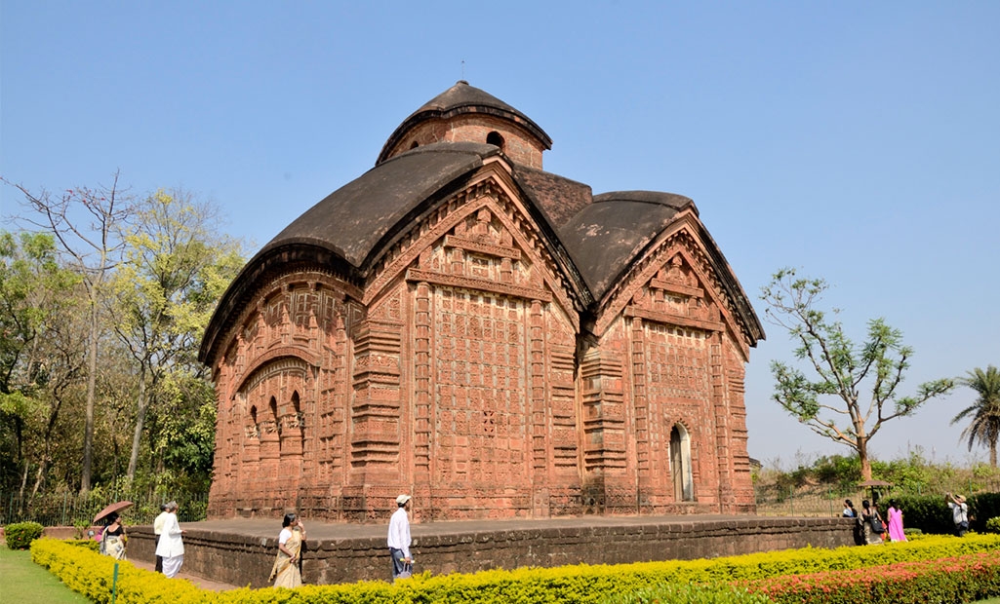
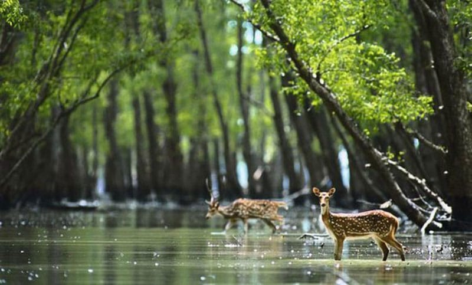
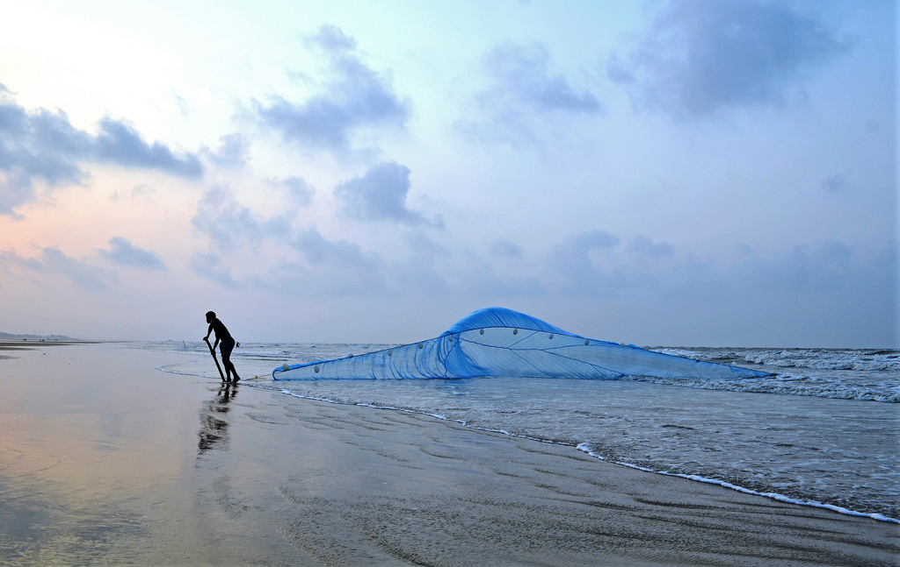

|
 |
Bishnupur: The Terracotta Land
Dotting the landscape of West Bengal's Bankura district (135 Km from the city limits);
Bishnupur happens to be a history buff's oyster.The cultural nourishment of this
princely Bengal rose to illustriousness under the royal patronage of the Malla
Dynasty in the 17th century. |
{kind=link}
|
 |
Sundarban
The Sundarban National Park is the largest delta region of the world i.e. the Bay of Bengal. It is also the largest single block of tidal mangrove forest. The UNESCO has declared this reserve forest as a World Heritage Site. The forest lies in the mouth of the vast confluence of three major River system of India viz. the Ganges, Brahmaputra and Meghna. |
{kind=link}
|
 |
Tajpur: The Mecca for Adrenaline Rush in Bengal
The mystifying waves and the natural beauty of the Tajpur beach, does woo the hearts of the beach lovers. Situated along the sea fringes, one can observe the dense forest of Tamarisk trees which highlight the crimson beaches.
Dynasty in the 17th century. |
{kind=link}